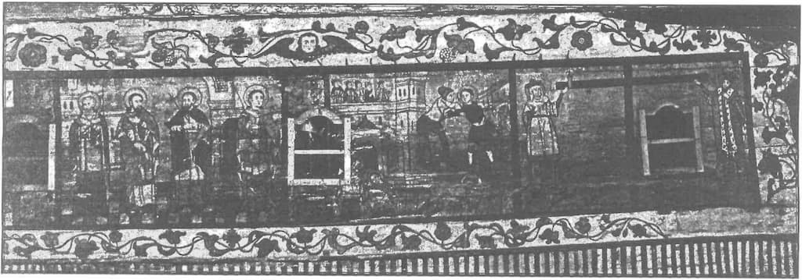

Pentru ca Biserica Ortodoxă să nu mai fie acuzată de colaboraționism și slugărnicie cu puterea lumească și chiar de trădare față de valorile ei perene, am propus Sfântului Sinod al Sfintei noastre Biserici Ortodoxe Române o doctrină socială, care să reglementeze moral relația dintre stat, lumea seculară și Biserică.
Întrucât statul actual a „condamnat” în general crimele comunismului dar nu și ideologia lui care le-a făcut posibile, Biserica este datoare moral să intervină și să-și precizeze poziția față de următoarele dileme etice:
a. Cum e posibil să se demaște totalitarismul ateu și să se condamne crimele comunismului, fără să se treacă la identificarea responsabilităților și culpabilităților celor care le-au comis? În primul rând această identificare trebuie făcută nu cu scop de răzbunare, ci de îndreptare morală, vindecare a istoriei, de prevenție a repetării istoriei, șansă de penitență celor care au slujit comunismului, precum și celor care încă îl mai slujesc în diverse moduri în nouă nomenclatură! În al doilea rând miza condamnării morale a torționarilor și a ideologiei comuniste este un act de dreptate și un exercițiu împotriva uitării forțate.
b. Nu este moral ca la finalul războiul rece și în perioada tranziției năucitoare, bilanțul să arate, că tot victimele sunt cele care au pierdut și atunci și acum iar torționarii și fii acestora precum și politrucii jefuitori la toate nivelurile, să câștige și atunci și acum. Nu este oare o ipocrizie fără margini să condamni crimele comunismului (vezi raportul Tismăneanu) fără să fie demascați adevărații călăi? De ce crimele și ororile comunismului nu sunt considerate genocid și condamnate ca atare, așa cum au fost declarate cele ale nazismului? De la ce număr de victime în sus este valabil un genocid? Iată întrebări deloc retorice, care dau măsura dilemei etice sau bioetice a prezentului. Din păcate atât politicienii cât și Biserica se complac de două decenii în această incertitudine și compromis. Soluția ieșirii din această situație jenantă și condamnabilă este folosirea unei măsuri corecte de evaluare și asumare a istoriei recente, având ca punct de pornire valoarea omului ca persoană și chip al lui Dumnezeu, sau cel puțin să se raporteze la valorile etice sau bioetice ale ființei umane.
c. Întrucât Biserica, spațiu liturgic mântuitor, ca loc de întâlnire dintre memorie și actualizare, dintre trecut și prezent în perspectiva viitorului, ca loc al împăcării și al iertării este chemată să amintească omului și generațiilor că nu putem începe o nouă pagină a istoriei fără mărturisirea greșelilor și a păcatelor în mod personal și plenar. Altfel pagina istoriei care urmează nu va fi mai bună decât cea anterioară; să amintească foștilor slugi ai regimului totalitar comunist, că nu e moral să stea fără penitență și remușcări la adăpostul drepturilor omului, pe care tocmai ei, mai bine de o jumătate de secol le-au contestat și că nu e corect și drept să se bucure de o amnistie generală tacită.
d. Este profund creștin să nu ignori experiențele generațiilor trecute, oricât de neplăcute sau de stânjenitoare ar fi acestea și să îndemni la pocăință comunitară sau ecclesială, oferind, astfel, posterității exemple de sancțiune și de reparație morală. Este inadmisibil că din partea BOR nu s-a început procedura de canonizare a victimelor holocaustului roșu. Să nu uităm că Împărăția lui Dumnezeu este dreptate, bucurie și pace în Duhul Sfânt (Rom. 14, 17). Numai atunci Biserica Ortodoxă Română poate considera că lucrează pentru Împărăția lui Dumnezeu și nu la împărăția lumii acesteia, când își îndeplinește cu orice risc funcția diaconală, profetică și jertfelnică a mărturisirii lui Iisus Hristos și a Împărăției Sale pe pământ.
Prezint mai departe câteva teze centrale, propuse Sfântului Sinod al BOR în vederea adoptării unei Doctrine Sociale a Bisericii, privind responsabilitatea Bisericii în contextul social, politic, cultural, științific și etnic1.
1. Biserica și Națiunea
● Biserica, după ființa sa, este un Organism și un Corp numit „Trupul lui Hristos”2, care include Națiunea, dar nu se identifică cu ea, ci cu Împărăția lui Dumnezeu, „căci nu avem aici cetate stătătoare, ci suntem în căutarea celei viitoare”3.
● Cei morți, alături de cei vii și cei ce se vor naște alcătuiesc neamul din care ne tragem și alături de care vom fi chemați la judecată4.
● Nu este întâmplător faptul că ne naștem într‑o anumită familie, că aparținem unui anumit neam.
● Dumnezeu a sădit fiecărui neam o misiune, ne‑a hotărât o evoluție în istorie.
● Fiecare neam este responsabil de trecut și dator să pregătească calea pentru urmași.
● Biserica vorbește despre judecata particulară — când fiecare va răspunde pentru faptele sale — și despre judecata universală — când vom da socoteală și ca neam, când vom răspunde pentru istoria la care am fost părtași în timpul vieții, pentru „umărul” ce l‑am pus ca acest neam să meargă spre înviere.
● Despre „Noul Ierusalim”, cetatea cerească a fiilor lui Dumnezeu de după învierea și judecata obștească, stă scris: „Neamurile vor umbla‑n lumina ei, și‑mpărații pământului într‑însa își vor aduce slava”5. Și: „Cine nu se va teme de Tine, Doamne, și nu va slăvi numele Tău? Că Tu ești Sfânt, și toate neamurile vor veni și se vor închina înaintea Ta, pentru că judecățile Tale au fost arătate”6.
● Scopul Bisericii este de a transforma Națiile în Poporul lui Dumnezeu. În acest sens este chemat creștinul să activeze și să‑și dezvolte mai departe credința, cultura națională și conștiința de sine a unei nații.
1.1. Biserica și Statul
● Sf. Scriptură cheamă pe cei ce au puterea și autoritatea statală să o folosească pentru apărarea de rău și pentru susținerea binelui. În aceasta constă sensul moral al existenței statului7.
● „A da cezarului ce este al cezarului și lui Dumnezeu ce este al lui Dumnezeu”8 arată separarea treburilor Bisericii de ale Statului și datoriile creștinului față de Dumnezeu și față de Stat.
● Nerespectarea sau nesupunerea față de o lege a statului este îndreptățită atunci când ea contravine legii lui Dumnezeu. „Trebuie să ascultăm mai mult de Dumnezeu decât de oameni!”9.
● Atunci când lucrarea de misiune a Bisericii este oprită sau împiedicată de puterea statală, Biserica trebuie să aibă curajul de a acționa cu mijloacele specifice.
● Săvârșirea lucrării filantropice creștine nu poate fi oprită de puterea lumească; dacă puterea lumească îndeamnă la lezarea integrității anatomice și spirituale a persoanei, la discriminare sau păcat – Biserica Ortodoxă nu trebuie să se supună. În acest caz, Biserica trebuie să aibă o atitudine critică și moralizatoare, în sens profetic10.
● Biserica trebuie să intervină pentru ușurarea vieții credincioșilor ei. Sf. Vasile cel Mare face apel la bunătatea unui agent fiscal ca preotul dintr‑un sat să nu sufere nici o păgubire din pricina impozitului11. Iar în altă scrisoare îi scrie unui agent fiscal să fie omenos, pentru a se putea arăta vrednic de o faimă nemuritoare12.
● Rugăciunea pentru „înalții dregători” este un “lucru bun și bine primit înaintea lui Dumnezeu, Mântuitorul nostru, ca noi să ducem o viață pașnică și liniștită, cu toată evlavia și cu toată cinstea”13.
1.2. Biserica și politica secularizată
● Creștinii au obligația de a participa la viața publică.
● Valorile acestei lumi oferă prea puțină motivație în raport cu aspirațiile creștinului.
● Biserica nu trebuie să susțină un anume sistem politic sau ideologic, ci trebuie privită ca mijloc de tămăduire și de îndumnezeire a omului.
● Biserica nu condamnă politica în sine, ci numai politicianismul, demagogia și minciuna. Politica devine nocivă când luptă împotriva lui Dumnezeu și omului.
● Creștinismul ca doctrină și sistem „de viață din belșug”14 este net superior oricărei doctrine politice sau sociale. Biserica poate fi privită în acest sens ca o alternativă concretă și sigură pentru bunăstarea pământească, mântuirea lumii și a omului prin Iisus Hristos.
● Biserica respectă autonomia legitimă a ordinii democratice și nu‑și atribuie calitatea de a impune o soluție instituțională sau constituțională.
● Biserica nu este un partid religios, cu care se poate cădea la învoială în schimbul unor promisiuni materiale.
● Biserica este a lui Iisus Hristos, Trupul tainic, viu și activ în lume și în istorie. De aceea trebuie să fie metapolitică și să vegheze la spiritualizarea actului politic sau administrativ, nu să se dilueze în politic.
● Rolul Bisericii nu este de a se opune politicii, ci are chemarea de a „spiritualiza” politica și nu de a politiza Biserica. Prin „a spiritualiza politica” se înțelege că Biserica și slujitorii ei au datoria morală de a arăta politicienilor care sunt exigențele și principiile moralei creștine necesare a fi respectate în viața și activitatea politică15. Aceasta înseamnă a face politica „posibilă”, adică suportabilă.
● Cei ce scot dreptatea socială și morala din politică transformă lumea în haos și iad.
● Atunci când Biserica se lasă prinsă în jocul politic, repetă gestul arhiereilor Ana și Caiafa, sau al cărturarilor și al arhiereilor, care în loc să fi văzut în Hristos un Mântuitor, au văzut un tâlhar sau un rege lumesc și s‑au învoit cu Puterea să‑l răstignească, tocmai ei, care lucrau cu sacrul! Sacrul se retrage în fața lui Mamona și nu poate fi identificat nici chiar de „experți”! Nu se poate sluji la doi domni concomitent.
● Nu Biserica se găsește într‑o criză de identitate, ci societatea modernă, care se raportează la ea însăși (prin individualismul abstract și aritmic) și nu la Hristos. Nu creștinismul sau Biserica una, sfântă, sobornicească și apostolească a „eșuat”, ci omul fără de Dumnezeu.
● Nu există o politică creștină propriu‑zisă, ci doar creștini care fac politică.
● Creștinismul nu se epuizează în politică, nici într‑un proiect al organizării societății umane16.
● Nici o comunitate terestră nu e Dumnezeu. Așa cum umanismul a zdrobit chipul adevărat al omului „îndumnezeindu‑l în duhul lumii”, tot așa poate politica fără legea morală a lui Dumnezeu să sfâșie ființa umană, în timp ce ea este convinsă total că o slujește.
● Adevărata comunitate spirituală a creștinului e Biserica, nu statul. În acest sens nu există alternativă. În afară de Biserică nu există comunitate spirituală. De aceea nu se poate vorbi de un stat‑comunitate spirituală, sau de un stat teocratic.
● Când oamenii își închipuie că dețin secretul unei organizări sociale perfecte, își închipuie că pot folosi și orice mijloc — chiar și violența și minciuna — pentru a o realiza. Politica devine atunci o „religie lumească”, având iluzia că va construi raiul pe pământ. Nici o societate politică avându‑și propria autonomie și propriile legi nu va putea fi confundată cu Împărăția lui Dumnezeu.
● Parabola evanghelică despre grâu și neghină17 ne arată că numai Dumnezeu poate despărți pe supușii Împărăției de supușii celui rău, la sfârșitul veacurilor18. Cine pretinde să facă separarea sau judecata de pe acum, se substituie lui Dumnezeu și se opune răbdării Lui.
● Biserica Ortodoxă recunoaște, stăpânirii, respectiv politicii, sau mai bine zis „cetății omenești”, pe baza revelației biblice19, un statut trecător, propriu provizoratului acestei lumi în raport cu permanența lui Dumnezeu20.

1.3. Biserica și responsabilitatea socială
● Nu există o adevărată soluție a „problemei sociale” în afara Evangheliei.
● Creștinul nu are dreptul să ignore lumea în care trăiește.
● Credinciosul trebuie să fie prezent în centrele unde se elaborează orientările viitorului, pentru a fi promovate cât mai urgent principiile evanghelice de adevăr, dreptate, libertate, bucurie și pace în Duhul Sfânt, principii ce prefigurează Împărăția lui Dumnezeu pe pământ precum și în cer21.
● Aceste principii creștine trebuie să reintre în circuitul valorilor umane ținând cont de libertatea fiecăruia, de comunitatea de iubire și de strădania firească a omului după fericirea terestră în comun, în drumul lui spre veșnicie.
● Nimănui nu‑i este îngăduit să fericească pe alții cu de‑a sila, în numele unor principii politice sau programe sociale.
● Biserica trebuie să ia atitudine împotriva individualismului modern, atomizat și democratic, împotriva totalitarismului contemporan, autoritar și tiranic, care substituie adevăratei comunități de dragoste, a Bisericii lui Hristos, chipul apocaliptic al Leviatanului.
● Biserica trebuie să apere și să susțină demnitatea omului. Să fie o Biserică de zi cu zi – nu numai de duminică sau de sărbătoare – pentru oameni și pentru societate, să le apere interesele spirituale, morale, sociale, comunitare, materiale, toate în Duhul lui Hristos.
● Creștinul, pentru a evita eșecul, trădarea chipului adevărat al omului, drama pământească de a fi silit să trăiască rupt între două lumi, trebuie să se lepede de chipul modern al acestei lumi, să‑L mărturisească pe Hristos și Evanghelia Lui și să rămână un membru activ al Bisericii.
● Lepădarea de chipul acestei lumi nu înseamnă fuga de lume, nici militantismul indivizilor în lupta contra altor indivizi, sau împotriva structurilor care mențin nedreptatea socială, ci reprezintă urmarea lui Hristos, poate înseamna o alternativă pentru cei care doresc să cunoască pe Hristos și înseamnă că „fiii luminii sunt mai înțelepți decât fiii acestui veac”22.
● Vindecarea sau revitalizarea corpului social trebuie să se facă în Duhul și în numele lui Hristos, adică pașnic, prin exemplul personal și comunitar, creștinul să fie „sarea pământului” și „lumina lumii”23, și orice faptă bună să o facă din dragoste pentru Dumnezeu și aproapele, ținând cont de libertatea persoanei.
● Biserica nu ajută numai la găsirea unor soluții, ci face cu putință trăirea în chip omenesc a situațiilor de suferință, în așa fel încât în mijlocul lor omul să nu se piardă și să nu‑și uite demnitatea și chemarea.
● În mediile ecumenice li se impută ortodocșilor faptul că ei nu au de unde prezenta o etică socială24. O acuză total falsă, făcută de cei ce nu înțeleg că Ortodoxia nu poate fi plasată la nivelul natural și obligatoriu al problematicii impuse de modul de viață occidental. „Neracordarea” Ortodoxiei la acest mod de viață nu este o încurcătură istorică și nici o simplă absență de vigilență teologică, ci ea nu confundă etica socială și politicile sociale cu învățătura lui Hristos, nici nu transformă etica creștină în etică politică25. Ortodoxiei îi este străină teologia politică sau teologia revoluției!
● Morala socială a Bisericii Ortodoxe este o morală de comuniune, care se identifică cu conținutul ontologic al adevărului eclezial. Adevărul vieții e comuniune în Hristos prin Duhul Sfânt.
● Comuniunea constituie viața, dar constituie deopotrivă și morala vieții, dinamica vieții, impulsul și mișcarea ce împlinesc viața în deplină libertate a persoanei. În această comuniune, centrală este persoana, nu distanța existențială a realității individuale sau sociale a „celuilalt”.
● Este contradictoriu să vorbim de „etică socială” obiectiv aplicabilă, din moment ce evenimentul comuniunii se judecă exclusiv în cadrul libertății personale. Când se impun în mod convențional sau cu forța modele în afara persoanei, sau când dorim „să creăm de sus” o comuniune cu programe definite și cu legi raționale, cu reguli ireale de libertate și de justiție, sau de orice altă „valoare” obiectivă, mutilăm însăși viața și îi chinuim pe oameni26.
● Biserica respectă libertatea persoanei, nu numai ca împlinire sau reușită a comuniunii, ci și ca eșec personal al comuniunii, ceea ce înseamnă un respect și o stimă față de libertatea omului ca adevăr existențial.
● O atenție deosebită trebuie acordată așa‑numitelor „grupuri de risc”, sau celor care încalcă legea. Acești oameni au nevoie de o grijă pastorală și educațională deosebită. Prevenirea criminalității e posibilă prin educație și îndrumare spre afirmarea în societate a valorilor spirituale și morale autentice. Conlucrarea cu școala și cu ordinea de drept este esențială în acest sens.
● Secretul spovedaniei nu poate fi folosit nici în scopul prevenirii criminalității și nici în scopuri educaționale sau de altă natură. Numai duhovnicul poate interveni personal și cu tact pastoral în acest sens, dacă el consideră de cuviință.
● Biserica condamnă tortura și orice formă de umilire a persoanelor anchetate. Ea este chemată să se îngrijească de sufletele lor. De aceea Biserica înțelege pedeapsa nu ca pe o răzbunare, ci ca pe un mijloc de îndreptare și de purificare a păcătosului.
● Pedeapsa cu moartea este crimă, nu poate avea sens educativ și trebuie considerată ca un act barbar, care omoară și sufletul, nedându‑i condamnatului posibilitatea pocăinței.
● Unele mișcări creștine încearcă să reconstituie — fie și numai în cadrul socialului — unitatea universului spart de iscodirea modernă și să instituie un Dumnezeu‑colectivitate în locul Dumnezeului Creator, Tată și Mântuitor, să instituie transcendența naturală a socialului față de individ în rolul transcendenței absolute a Divinității; toate aceste încercări Biserica nu le poate privi decât ca pe o formă de neo‑păgânism. O astfel de „fericire pământească laolaltă” oferă nălucirea unei false așteptări paradisiatice, adică un „rai trist”, fără Dumnezeu.
Note
1 Valică, M., Chirilă, P., Băndoiu, A., Introducere în Teologia Socială. Teze centrale pentru o Doctrină Socială a Bisericii, București, 2005. pp. 165-172.
2 Vezi I Corinteni 12, 12‑14.
3 Evrei 13, 14.
4 Cf. „Fiecare în rândul cetei sale”. Pentru o teologie a neamului: Nichifor Crainic, Dumitru Stăniloae, Răzvan Codrescu, Radu Preda, Ed. Christiana, București, 2003, mai ales pp. 9‑15, 95‑119 și 175‑187. Titlul volumului are întemeierea în I Corinteni 15, 22‑23: „Căci precum în Adam toți mor, așa în Hristos toți vor învia. Dar fiecare în rândul cetei sale…” (subl. n.). Cf. și Răzvan Codrescu, Cartea îndreptărilor, Ed. Christiana, București, 2004 (secțiunea „Dreptatea neamurilor”).
5 Apocalipsa 21, 24
6 Apocalipsa 15, 4
7 Vezi Romani 13, 2‑7.
8 Matei 22, 21.
9 Fapte 4, 19; 5, 29.
10 Temeiuri biblice: „Vai vouă, cărturari și farisei fățarnici, că închideți împărăția cerurilor de dinaintea oamenilor; că voi nu intrați, și nici pe cei ce intră nu‑i lăsați să intre!” (Matei 23,14). „Vai vouă, cărturari și farisei fățarnici, că dați zeciuială din izmă, din mărar și din chimen, dar ați lăsat părțile cele mai grele ale legii: dreptatea, mila și credința; pe acestea trebuia să le faceți, fără ca pe acelea să le lăsați!” (Matei 23.23). „Vai vouă, cărturari și farisei fățarnici, că voi curățiți partea din afară a paharului și a blidului, dar înlăuntru ele sunt pline de răpire și de ne‑nfrânare!” (Matei 23, 25).
11 Vasile cel Mare, Sf., Scrieri, partea a 3‑a, Ed. Institutului Biblic și de Misiune al Bisericii Ortodoxe Române, București,1988, p. 175.
12 Ibidem, p. 256
13 I Timotei 2, 2‑3.
14 Ioan 10, 10.
15 Pentru raportul ortodox dintre Biserică și politică, cf., între altele, Costion Nicolescu, Teologul în cetate. Părintele Stăniloae și aria politicii, Ed. Christiana, București, 2003 (cu ample citate din publicistica Părintelui Stăniloae de dinainte de 1945). Pentru o abordare mai recentă, cf. Radu Preda, Biserica în Stat. O invitație la dezbatere, Ed. Scripta, București, 1999.
16 Vezi Luca 12, 13‑14: “Învățătorule, zi fratelui meu să împartă cu mine moștenirea. Iar El a zis: Omule, cine M‑a pus pe Mine judecător sau împărțitor între voi?“.
17 Matei 13, 24‑30, 36‑43.
18 Matei 25, 31.
19 Vezi Romani 13; I Timotei 2, 1‑4.
20 Cf. Faptele Apostolilor 4, 19: „Judecați voi singuri dacă este drept înaintea lui Dumnezeu să ascultăm mai mult de voi decât de Dumnezeu“.
21 Vezi Romani 14, 17; Matei 5, 1‑7, 29; Matei 6, 33; I Petru 3, 14.
22 Luca 16., 8.
23 Matei 5, 13‑16.
24 Vezi Ch. Yannaras, Yannaras, Ch., Libertatea Moralei, Ed. Anastasia, București, 2002, p. 205.
25 Ibidem, pp. 209‑210.
26 Ibidem, pp. 224‑226.
Comentarii